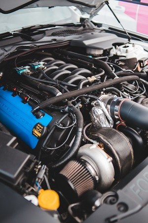

How to Change the Oil in Your Car
Required Tools
- Crescent Wrench in Drain Plug Size
- Method of Lifting Vehicle (Jack & Jackstands, Hoist, Ramps, etc.)
*Additional tools may be required if access to the drain plug and filter are obstructed.
Quality of Life Tools
- Fluid Catch Pan (Technically Not Required, but Highly Recommended)
- Ratchet Wrench & Accompanying Socket Set
- Oil Filter Wrench (Fitting Ratchet Wrench)
Consumables
- Appropriate Amount of New Engine Oil, of the Correct Weight
- New Oil Filter
Lift the Vehicle
Following the vehicle manufacturer's guide to lifting your vehicle, get the vehicle off the ground. If you are using a jack and jackstands, never get under a vehicle supported only by a jack.Drain Old Oil
Place your oil catch pan under the most likely landing zone for the draining oil. Assuming your vehicle has access to the drain plug and oil filter, use your wrench to remove the drain plug. If your vehicle was recently running, the oil may be very hot. To speed the flow of oil into the drain pan, you can remove the oil fill cap from the top of the engine. From this point forward, under no circumstances should you start your engine until new oil has been added. Allow time for as much oil to drain as possible, but keep in mind as the stream thins wind may blow the stream out of the pan and make a mess if you’re working outside. Once the stream has sufficiently slowed or stopped, reinstall the oil drain plug and tighten it snuggly.
Remove Old Oil Filter
Relocate your oil catch pan under your oil filter. Oil filters tend to make a mess during removal, as they are full of oil and retain some oil above them. To help mitigate this, you can use a screwdriver and hammer to punch a small hole in the bottom of the oil filter, allowing any standing oil to drain prior to removal, but this is not a requirement. Once you’re satisfied, remove the oil filter. If it was installed correctly, you should be able to remove it by hand, but sometimes heat cycles and the buildup of road grime can make it difficult to remove. An oil filter wrench helps if this is the case.
Install New Oil Filter
Remove your new oil filter from the box. Using either the used or new oil, coat the rubber seal around the circumference of the filter mating surface. Used oil is fine as this is not a significant volume, and only serves to prevent tearing or other damage to the seal while installing. Once coated, ensure the old seal came off the motor with the old filter as if it is still present and you install the new filter you will likely soak your entire work area in oil when you try to start the motor. Once satisfied that the gasket is not on the motor, install the new filter. Tighten it with the tips of your fingers until you cannot tighten it anymore, and then tighten it a further quarter turn with your full grip.
Add New Oil
Once the filter and drain plug are installed, you are ready to fill the motor with oil. You can research online or check your owner’s manual to know the approximate volume required or check the dipstick periodically to know when you’re approaching the required level. Once the dipstick shows the proper level has been reached, add a further half cup or so to account for the volume in the oil filter (which is currently empty). Start the vehicle and let it idle for 30 seconds, then rev it to about 3000RPM 2-3 times. Turn the vehicle off and check the level again, topping up as required (as the filter is full now, only fill to the ‘full’ mark).
Lower the Vehicle.
Safely return the vehicle to its wheels, and you should be ready to drive again.
To Review
- Lift the Vehicle
- Drain Old Oil
- Remove Old Oil Filter
- Install New Oil Filter
- Add New Oil
- Lower the Vehicle.